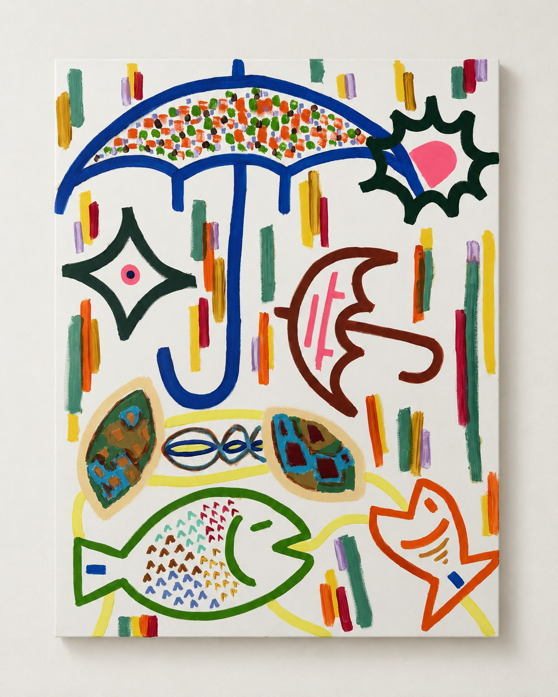
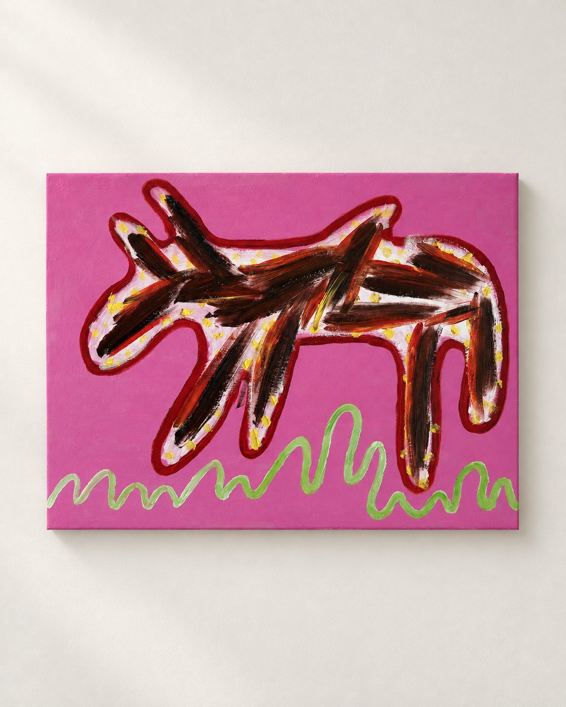
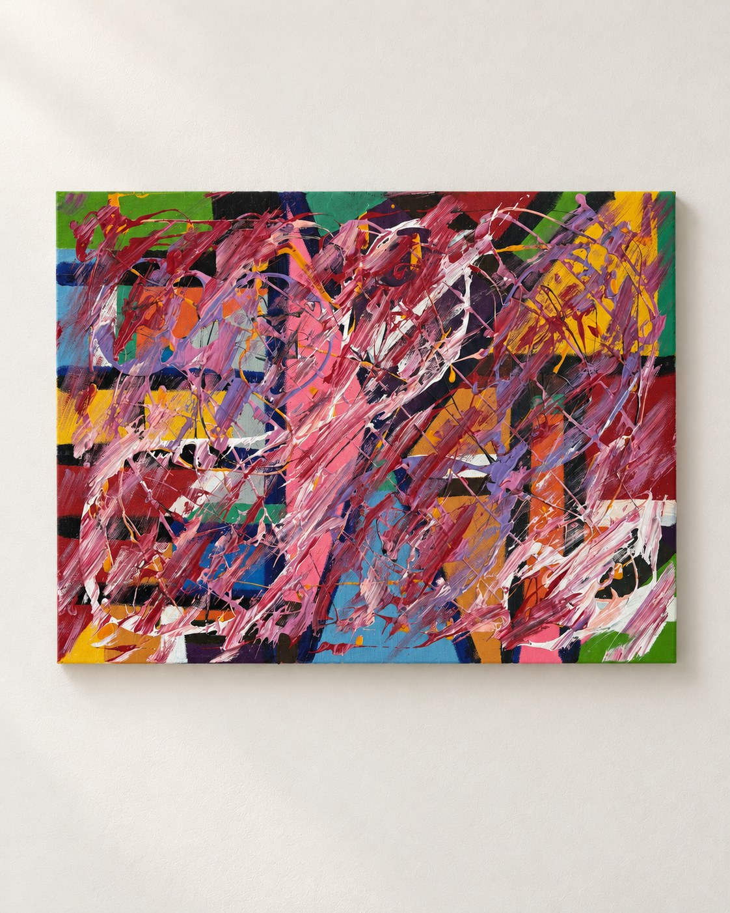

하나의 브랜드를 함께 키우기.
저는 사업의 뼈대와 방향을 잡고, AI를 활용하는 운영 파트너와 함께 브랜드를 키워가고 싶습니다.



김동현의 회화 · AI 전시 연출
그림과 장면,
문장으로.
선과 색으로 남긴 감각.
회화 30점
AI로 배경을 정리한 전시 연출 이미지입니다. 작품을 열면 원본 사진과 비교할 수 있습니다.
다른 사람의 삶을 살아보는 일.
연기 기록 5편
SCENES / 장면 목록
생각과 상상,
문장으로 남긴 장면들.
나는 분명 시키는대로 했다. 그리고 계획대로라면 날개가 달려서 하늘을 날고 있어야 한다. 차가운 빙판위에 더 이상 서있을 수가 없다. 멀리서 수렵꾼이 나에게 총을 겨누며 다가오고 있다. 발만 동동구르는데 별다른 해결책이 보이지 않는다. 그렇지만 아주 조금씩 그리고 분명하게 내 몸속에서 변화가 일어나고 있다. 장기들이 서로…
생각을
제품으로.
네 개의 브랜드를 운영하고 있습니다.
AI를 활용해 일하는 방식을 바꾸고 있습니다.
저는 사업의 뼈대와 방향을 잡습니다.
각 브랜드를 맡아 성장시킬 운영 파트너를 찾습니다.
알마는 실제 제품 사진을 담았습니다. 나머지 브랜드 표지는 타이포그래피 시안입니다.
창업에서
매각까지.
B2C · B2B · B2G 운영
3회에 걸친 누적 투자 유치
창업과 운영 과정에서 채용
트로스트 매각
LinkedIn에 남긴 소개와 경력을
이곳에서도 읽을 수 있습니다.
정신건강 플랫폼의 창업부터 성장과 매각까지.
LinkedIn에 직접 작성한 경력 설명 원문입니다. 수치와 성과는 해당 기록을 기준으로 합니다.
기업·기관 CSR과 자원봉사자를 연결한 비영리 창업.
LinkedIn에 직접 작성한 경력 설명 원문입니다. 수치와 성과는 해당 기록을 기준으로 합니다.
컴퓨터공학을 공부하며 쌓은 엔지니어링의 바탕.
LINKEDIN / 소개 원문
영리·비영리의 창업 경험을 가진 Serial Entrepreneur. 10년간 0 → 1 → Scale → Exit 전 사이클을 주도했습니다. 임팩트와 비즈니스가 공존하는 모델을 고민합니다.
소개·경력 원문 보관 · 2026-10-30
출처: LinkedIn 프로필 ↗LinkedIn 경력에 연결해 둔 자료입니다.
기사 원문은 각 매체의 사이트에서 열립니다.
썸네일 출처: ZDNET Korea · 머니투데이
More to make.
More to explore.
저는 사업의 뼈대와 방향을 잡고, AI를 활용하는 운영 파트너와 함께 브랜드를 키워가고 싶습니다.
그림을 전시하거나 독립영화를 함께 만드는 일. 다양한 사람들과 예술적 시도를 이어가고 싶습니다.
유튜브에는 작업과 생활의 기록을 이어가려 합니다. 월 1회 열리는 재스퍼의 실험실에서는 서로 다른 일을 하는 사람들을 만납니다.
Let’s make
something.
브랜드 하나를 맡아 키울 사람,
그림과 영화를 함께 만들 사람을 찾습니다.
각 항목에서 협업 방향을 확인할 수 있습니다. 신청 접수는 준비 중이며, 입력 내용은 전송·저장되지 않습니다.